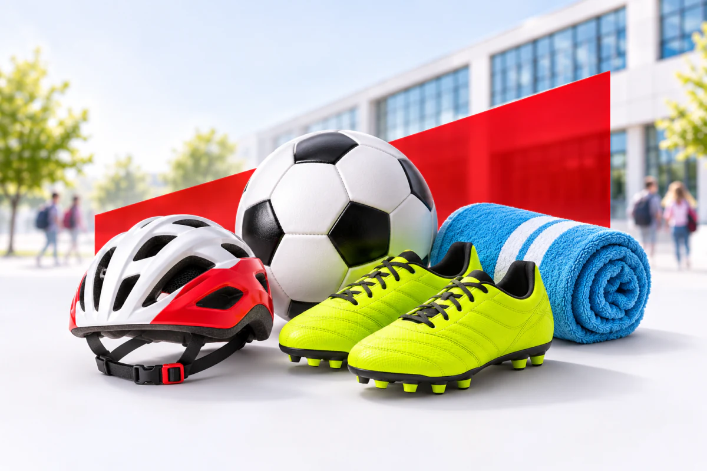
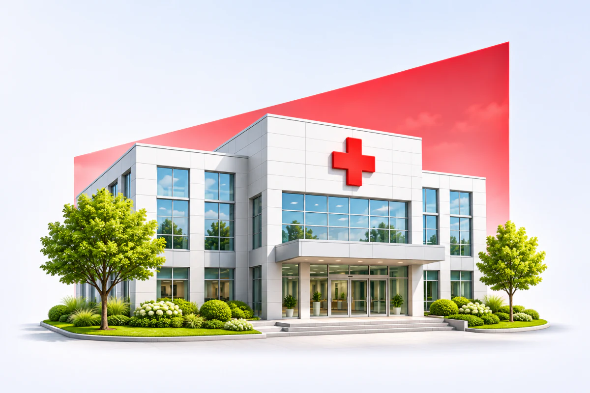

Ochrona przez cały rok
Wybrany wariant może działać 24 godziny na dobę w szkole, domu, na placu zabaw, podczas ferii, wakacji i wyjazdów zagranicznych.
NNW szkolne
W szkole, w domu, na treningu i podczas wakacji – odpowiednio dobrane ubezpieczenie może zapewnić wsparcie finansowe po urazie, wypadku lub innym zdarzeniu objętym ochroną.
 NNW-01zdjęcie z kampanii
NNW-01zdjęcie z kampaniiCo zyskujesz
Dzieci są pełne energii i każdego dnia podejmują nowe wyzwania. Ubezpieczenie NNW szkolne działa zgodnie z wybranym zakresem i może pomagać również poza szkołą – podczas zabawy, treningu, ferii, wakacji oraz wyjazdów.
Wybrany wariant może działać 24 godziny na dobę w szkole, domu, na placu zabaw, podczas ferii, wakacji i wyjazdów zagranicznych.
Możliwy jest zwrot kosztów konsultacji, badań, zabiegów, rehabilitacji, leków, sprzętu ortopedycznego oraz odbudowy zębów uszkodzonych w wypadku.

Zakres można dopasować do treningów i zawodów, między innymi piłki nożnej, jazdy na rowerze, pływania, sportów walki, tańca, jazdy konnej lub narciarstwa.
Wybrane warianty przewidują świadczenia po rozpoznaniu chorób wskazanych w umowie, na przykład nowotworu złośliwego, cukrzycy typu 1, sepsy lub boreliozy.
W wybranych pakietach dostępne jest wsparcie psychologiczne, prawne i informatyczne po trudnym zdarzeniu, hejcie internetowym albo cyberprzemocy.

Dodatkowe świadczenie za hospitalizację po wypadku, a w wybranych wariantach również wskutek choroby, może pomóc rodzinie pokryć nieplanowane wydatki.
Indywidualny wybór
Możesz samodzielnie wybrać zakres ochrony, sumę ubezpieczenia i pakiet dopasowany do aktywności oraz potrzeb dziecka.
Porównamy dostępne oferty i wyjaśnimy różnice między wariantami, aby ochrona odpowiadała sytuacji Twojej rodziny.
Uniqa
10% zniżki na NNW Szkolne Indywidualne
−10%
KodSZKOLNE10
Zakres ochrony, limity świadczeń, warunki wypłaty oraz wyłączenia odpowiedzialności różnią się zależnie od ubezpieczyciela i wariantu. Szczegółowe zasady znajdują się w aktualnych ogólnych warunkach ubezpieczenia.
Dobierz ochronę do aktywności i potrzeb dziecka.
Porównaj oferty NNW szkolnegoKontakt
Pomożemy wybrać pakiet odpowiedni do wieku, aktywności i potrzeb dziecka.